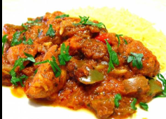

Mutton Jalfrezi
⭐⭐⭐⭐☆
4.3 (180 reviews)

Ingredients
Cooking oil 4-5 tbs
Laung (Cloves) 4
Darchini (Cinnamon stick) 1
Hari elaichi (Green cardamom) 3-4
Tez pata (Bay leaf) 1
Adrak lehsan paste (Ginger garlic paste) 1 tbs
Onion grinded 1 medium
Mutton boneless cubes ½ kg
Lal mirch powder (Red chili powder) 1 tsp or to taste
Dhania powder (Coriander powder) 1 tbs
Haldee powder (Turmeric powder) 1 tsp
Zeera powder (Cumin powder) 1 tsp
Salt 1 tsp or to taste
Water 2-3 tbs or as required
Tomato grinded 2 medium
Water 1 & ½ Cups or as required
Cooking oil 1-2 tbs
Hari mirch (Green chili) julienne 1-2
Pyaz (Onion) cubes ½ Cup
Shimla mirch (Capsicum) cubes ½ Cup
Tamatar (Tomato) deseeded & cubes ½ Cup
Namak (Salt) 1 pinch
Garam masala powder ½ tsp
Soy sauce 1 tbs
Directions
In pot,add cooking oil,cloves,cinnamon stick,green cardamom,bay leaf and mix.
Add ginger garlic paste and mix well.
Add grinded onion,mix well and cook for 3-4 minutes.
Add mutton boneless cubes and mix well until changes color.
Add red chili powder,coriander powder,turmeric powder,cumin powder,salt and mix well for 2-3 minutes.
Add water,mix well and cook for 3-4 minutes.
Add tomatoes,mix well and cook for 4-5 minutes.
Add water,mix and bring it to boil.
Cover and cook on low flame until meat is tender (approx. 40-50 minutes).
In frying pan,add cooking oil,green chili and mix well.
Add onion and fry for 1 minute.
Add capsicum and mix well.
Add tomato and mix well.
Add salt,mix well & set aside.
In pot,add garam masala powder and mix well.
Remove and discard bay leaf.
Add soy sauce and mix well.
Now add stir fried vegetable,give it a good mix & serve.
Nutrition Facts
Calories: 350 | Protein: 28g | Carbs: 12g | Fat: 18g